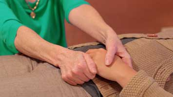

- JIN SHIN JYUTSU PHISIO-PHILOSOPHY
- ("Shin" (Hebrew) "Life Breath of the Gods" or "Spirit of God")
- (Phisio-Philisophy - "Nature - Effortless Reality"
- Man "Compassionate, Aware, Understanding, KNOWING"
Shin Jyutsu Phisio-Philisophy is a dynamic healing art from ancient tradition. Brought by Mary Burmeister to America, a gift from Jiro Murai of Japan. Murai decoded this Art from the Kojiki (Record of Ancient Things-AD 712) and other ancient records contained within the Imperial Archives of Japan.
Jin Shin Jyutsu works wonderfully with people and animals alike.
Jin Shin Jyutsu sessions can be done in person or remotely.
Each body has a main revitalizing energy that follows a circulatory pattern. This energy revitalizes all of our “individualized” body function energy circulation patterns. The rhythm of this energy cannot be destroyed, but hereditary issues and abuses to the body knowingly or unknowingly can affect the supply of the energy for the proper function of our body energy circulation patterns. The body is affected by the air, food, action, thoughts, etc. that make up each moment of our lives. When harmony becomes disrupted or imbalanced it becomes the cause for various tensions, illnesses and diseases. Physical symptoms of distress and pain are your body’s way of telling you it is out of harmony.
Subconsciously and/or unconsciously we create complex and sometimes mysterious mechanisms to protect us from traumatic and stressful experiences. These mechanisms run silently below the surface of our conscious mind as coping skills that help us endure and survive difficult events, situations and chronically painful conditions throughout our lives. However, their repetitive application often leads to thoughts, feelings, belief systems, patterns and actions that create disharmony and can lead to illness or diseases that rob us of living our fullest potential in life. Each moment of our lives is recorded in our cellular memory. The cellular memory records stressful or traumatic events you have experienced and, very important, the coping skills you called up or invented to respond to the stress. At the time, that particular coping skill was the best tool you had available. For example, if a child grew up in an environment of extreme criticism, s/he may have coped by disconnecting from their emotions or becoming self-critical as well. While that subconscious mechanism helped them get through their childhood, most likely it has been the cause of later problems with self-confidence or trying to form intimate relationships. That cellular history is still active somewhere within you. Hyper-vigilant, whenever you encounter a situation connected in some way to that earlier experience, at some level, alarm bells go off and your subconscious initiates behavior for you to avoid or escape the moment. When you harmonize negative belief systems and patterns you stop that self-sabotaging behavior and often realize numerous ways in which you feel better being in the world.
Jin Shin Jyutsu is energy work (sometimes referred to as energy medicine or vibrational healing) that brings the body, mind and spirit into Harmony. It clears and brings balance to the body’s energies, allowing you to function better, feel better and facilitates our own profound healing capacity. It is a valuable compliment to conventional healing methods, inducing relaxation and reducing the effects of stress. It can be used alone or safely in conjunction with any other therapy or medication. A Jin Shin Jyutsu session lasts about an hour. It uses simple hands-on sequences to restore emotional equilibrium, relieve pain, and release the causes of both acute and chronic conditions.
Jin Shin Jyutsu employs twenty-six Energy Safety Locks on the body that are located along the pathways that feed life into our bodies. When one or more of these Energy Safety Locks become blocked, the blockage or stagnation will disrupt the flow and eventually disharmonize the complete path of the energy flow. Holding these locks in combinations will bring balance, physically, mentally, emotionally and spiritually.

Jin Shin Jyutsu does not involve massage, manipulation of bones or muscles or the use of drugs or substances. It is a gentle art, employed by placing the fingertips over clothing on designated locks, to harmonize and restore the energy flow. When the body’s energy is circulating freely it will be without disharmony and one can enjoy a life of longevity, happiness and benevolence.
We do not diagnose in Jin Shin Jyutsu. We look for the harmony. There are no problems or big scary labels. Everything is viewed as a project. Projects are viewed as a process that leads to a desirable result. Problems are limited; projects are open-ended and can be fun.
Jin Shin Jyutsu has wonderful side effects. Often, when receiving sessions to return the body back to health from a particular label or project one will find that other disharmonies will also disappear that were not part of one’s initial intended result.
Jin Shin Jyutsu will help you to leave the past behind, let go of the fear and worry of the future and help you to stay in the present. For those who choose to become actively responsible for maintaining their own health and happiness, Jin Shin Jyutsu is an excellent means to that end. In dealing with stress, chronic pain, critical illness or more recent health disharmonies and/or for health maintenance, mental clarity and high energy level, Jin Shin Jyutsu is a simple and powerful tool, available to all.
The truth is that within each one of us lies the power to cast all misery aside and to KNOW complete Peace and Oneness – to BE that beautiful creation of perfect harmony.
Jin Shin Jyutsu sessions, demonstrations and lectures offer a way of Being to help yourself, help others and to know your true magnificence. In experiencing Jin Shin Jyutsu one’s insight of innate potential and foundation for expanding one’s awareness and understanding are awakened.
Energy medicine, alternative medicine and all holistic healing modalities work from the inside out. The body will work to harmonize the cause which ultimately eliminates the symptoms that have manifested in the physical body. Disharmonies that have manifested into physical symptoms and or illness often have many layers to them.
There are no set rules or limits on how to use or schedule sessions. It is best to discuss this with your healing facilitator, contemplate how you feel and then make your decision. Everybody is different and every body is different. Therefore it is not possible to predict how many sessions it will take for you to experience the results that you are seeking. Each session received goes deeper into the body and into your beingness clearing and harmonizing any accumulations and disharmony. This being said, there are a few things to keep in mind when scheduling sessions….
- One session is a good stress reliever and will clear surface accumulations.
- A set of 3 sessions completed within 7 days is recommended for 1st time Jin Shin Jyutsu clients, and current or minor disharmonies i.e., gallstones, flu, cold, kidney stones, periodic wellness maintenance, grieving, feeling stuck etc.
- It is recommended that you start with a set of 10 sessions, completed as closely together as possible within a 30 day period, when addressing: chronic, long term and/or critical disharmonies and for annual preventative wellness and health maintenance. Your body will be integrating the changes for up to 6 weeks after receiving a set of 10 sessions.